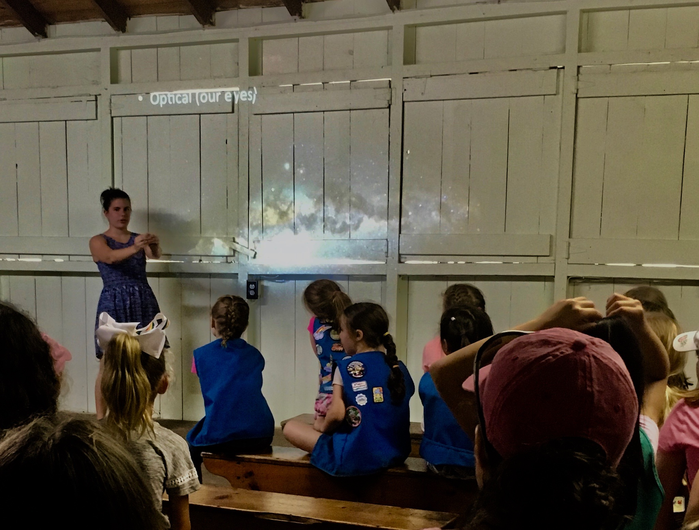

Teaching & Outreach
Amateur astronomy outreach first showed me the stars and planets in all their glory. Open observing nights where the local astronomy club set up all their telescopes allowed me to see the transit of Venus across the Sun, the rings of Saturn, and the moons of Jupiter. Their passion and excitment in giving back to the community has inspired me to do the same.

During my undergraduate career, I had the opportunity to run and lead the Haverford College public observing program, where I organized open observatory events. The astronomy undergraduate majors and I ran the two telescopes at Strawbridge Observatory, gave public lectures, and ran an event in conjunction with the Philadelphia Science Festival.
Through running the observing program, I also hosted day events for the local Philly main line elementary schools, where we gave telescope tours, answered questions, and did fun events such as solar system walks and using solar telescopes.
In graduate school, I was able to give back through both outreach and teaching. I have the opportunity to teach astronomy and python to advanced high school students through a pre-college summer program, where I have helped teach astronomy labs, created curriculum for the program, and am now running it.
I also TAed for the advanced observational astronomy class taught at Amherst College. I helped teach students how to take data using optical telescopes, reduce the data using python, and analyze and interpret their results. This opportunity has expanded my passion for teaching and seeing students succeed in all aspects of their career. 
My teaching experience includes:
- Summer 2019, Summer 2022: Astronomy Lab Coordinator, UMass Pre-College Program (Amherst, MA).
- Summer 2020, Summer 2021: Head Instructor and Astronomy Course Coordinator, UMass Pre-College Program (Amherst, MA).
- Fall 2018 - Spring 2020: Teaching Assistant, FCAD Observational Astronomy Course (Amherst, MA)
- Summer 2018: Astronomy Teacher, UMass Pre-College Program (Amherst, MA).
- Spring 2018: Lab Teaching Assistant, UMass Astronomy 100/101 Lab Sections (Amherst, MA)
Finally, I have been able to give back to my community by going into elementary and high schools and talking about astronomy. Some of these include:
- Winter 2020: Gave talk on exoplanets to middle schoolers as part of the Graduate Women in Stem Sound Bites Cafes (Amherst, MA)
- Spring 2020: Interview with an astronomer, Sunderland Elementary School (Sunderland, MA)
- Spring 2018: Led Astronomy & Space activities at a Girl Scout Space Day (Amherst, MA)
- Spring 2018: Talk to an Astronomer and Q&A, Astronomy Club Shrewsbury High School (Shrewsbury, MA)